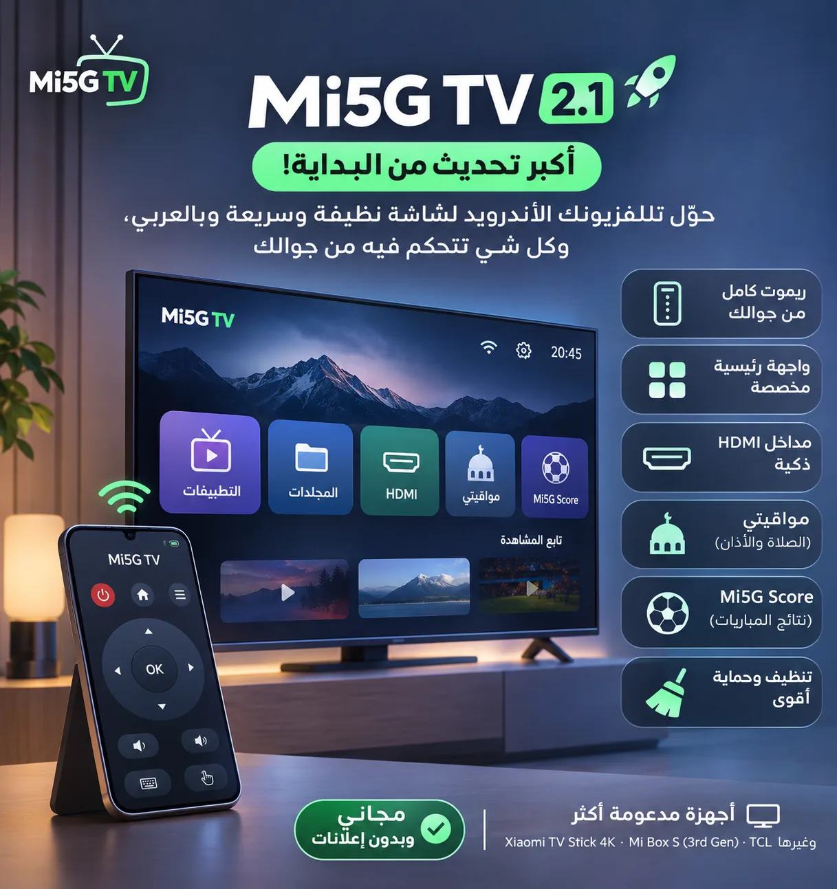
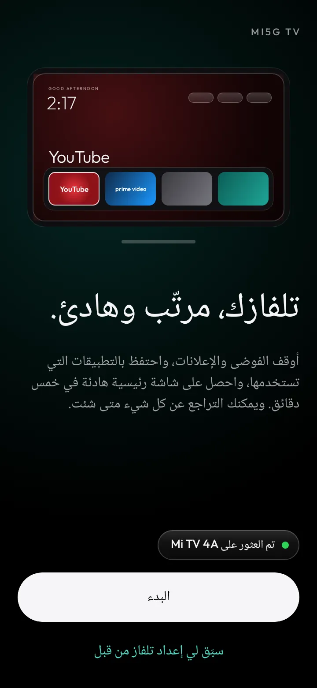
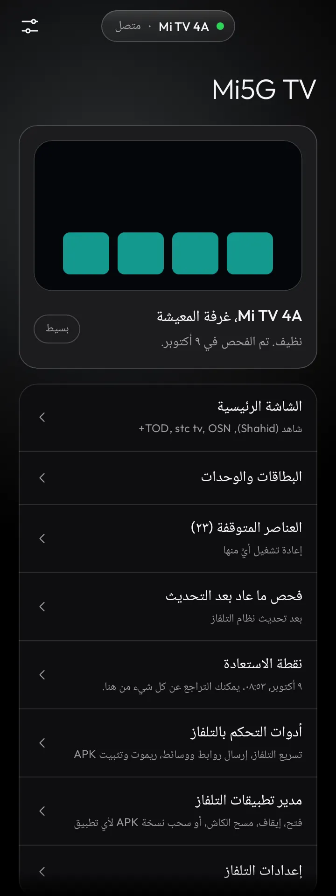
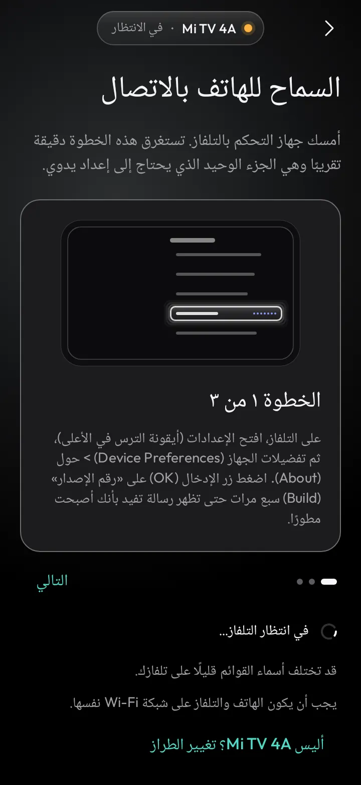
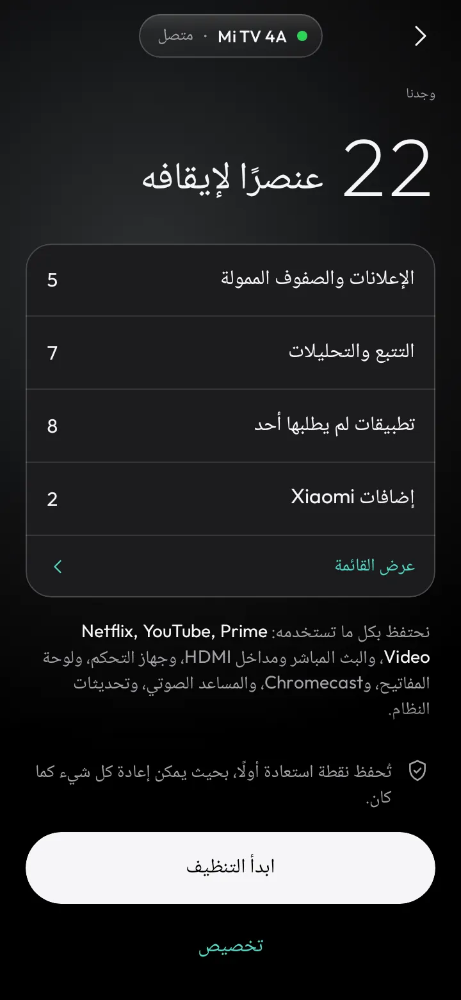
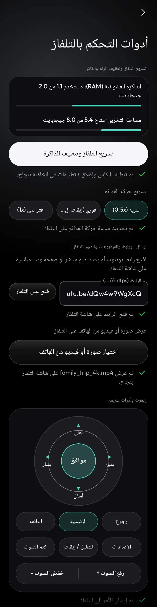
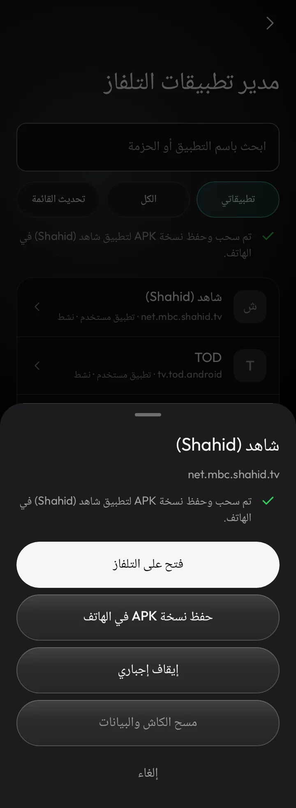
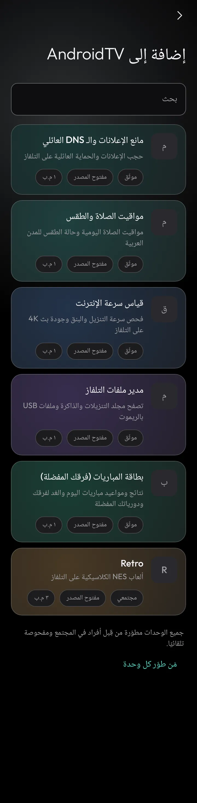

تقنية8 دقائق
Mi5G TV 2.1.1: ما الجديد منذ v1.6.0 — ريموت كامل وشاشة رئيسية عربية ومواقيت ومباريات
صدر Mi5G TV v2.1.1 في 6 نوفمبر 2026 (versionCode 24). هذا أحدث إصدار رسمي بعد v1.6.0، ويجمع كل ما أُعدّ في سلسلة 2.0 و2.1، مع إصلاحين لانهيارات على OnePlus 13 بنظام أندرويد 15. التطبيق عربي ومجاني وبدون إعلانات، يعمل من الهاتف عبر Wi-Fi (ADB over Wi-Fi) بدون روت على شاشات Android TV وGoogle TV وFire TV.
راجعنا سابقًا الإصدار 1.6.0 في مقالة تطبيق Mi5G TV: نظّف وسرّع شاشات Android TV وGoogle TV وFire TV من هاتفك بدون روت. هذه المقالة تبني عليها وتركّز على ما تغيّر منذ ذلك الإصدار، وفق ملاحظات الإصدار v2.1.1 وCHANGELOG.md وREADME عند الوسم نفسه.



ما الجديد منذ v1.6.0 (حتى 2.1.1)
بحسب ملاحظات الإصدار، هذا أكبر تحديث منذ البداية: شاشة رئيسية عربية نظيفة وسريعة تُدار من الجوال.
الجوال كريموت كامل
- ريموت جديد: أسهم، صوت، قنوات، لوحة لمس، ولوحة مفاتيح.
- إقران لاسلكي مدمج لأندرويد 11–14 (رمز الإقران والمنفذ) بدون كمبيوتر، مع إدخال يدوي للعنوان والمنفذ.
- ترتيب الشاشة الرئيسية من الجوال عبر QR: نقل البطاقات، تغيير الاسم والأيقونة، إخفاء التطبيقات، ومجلدات.
- نقل ملفات محدود بين الجوال والتلفاز عبر QR على نفس الشبكة (بدون تثبيت تلقائي).
- كتابة رسالة من الجوال تظهر في سطرين على شاشة التوقف.
واجهة رئيسية جديدة على التلفاز
- مجلدات للتطبيقات، وأعمدة الشبكة من 4 إلى 6، وحجم الأيقونات (صغير، متوسط، كبير).
- خلفيات: Bing اليومية، أو صور وفيديوهات من الجوال.
- مركز تحكم فوق أي تطبيق، وشريط وسائط علوي، وساعة عند الرجوع.
- صف «تابع المشاهدة» اختياري (يطلب صلاحية
READ_TV_LISTINGS). - تخصيص أزرار الريموت (ضغطة واحدة أو اثنتين أو ثلاث أو ضغط مطوّل)، وتعطيل الزر المعطوب.
- قفل الرئيسية على مشغّل Mi5G لأجهزة شاومي، مع رجوع آمن للمشغّل الأصلي بدون حذفه.
مداخل HDMI ذكية
- تثبيت مداخل HDMI في الرئيسية باسم جهازك.
- بطاقة «تشغّل جهاز» عند تشغيل جهاز على HDMI (مثل PlayStation 5 → HDMI 2).
- إخفاء المنافذ غير المستخدمة، وخيار عرض حالة HDMI عبر CEC فقط.
مواقيتي وMi5G Score على التلفاز
- مواقيت الصلاة والأذان الإجباري وتنبيه قبل الأذان ونافذة عائمة للصلاة القادمة، مع ضبط الإعدادات من الهاتف.
- خيار حساب العصر حنفي أو شافعي (وحدة مواقيتي v6).
- إذاعات قرآن مباشرة وتذكير يوم الجمعة (العنوان فقط).
- Mi5G Score: نتائج ومواعيد المباريات وجداول الدوريات وأحداث المباراة.
شاشات توقف وراحة
- شاشة توقف بالمدينة والساعة والتاريخ الهجري والميلادي والصلاة القادمة والطقس (أفكار Aerial TV بترخيص MIT من pengchujin؛ بدون فيديوهات Apple).
- ساعات هادئة تخفّف الإضاءة ليلًا (الافتراضي من 23:00 إلى 07:00).
- طقس بدون إعداد عبر موقع الإنترنت عند الحاجة، ومصدر احتياطي MET Norway إذا تعطلت Open-Meteo.
تنظيف أذكى وحماية أقوى
- إخفاء تطبيقات الشركة المصنّعة المزعجة (كتيّبات وعروض محلات).
- حماية حزم النظام المهمة وحزم TCL الأساسية من الحذف بالغلط، ومنع إيقاف حزم النظام الأساسية مثل SDK Sandbox في أندرويد 14.
- وضع خفيف تلقائي للتلفزيونات البطيئة، ورسائل خطأ أوضح بدل الصمت.
- مساعد لشاشات سامسونج Tizen وLG webOS: ريموت عبر Wi-Fi، وخطوات AdGuard DNS، وخطوات إيقاف إعلانات Home Promotion وLive Plus وSmart Hub.
- إصلاح أجهزة GAORUI (MediaTek / SDK 28): لا تُرفض الخطة إذا كان المشغّل موقّعًا بمفتاح آخر، مع حماية
com.ctv.android.tvboot.
أجهزة ودعم وصيانة
- ملفات تعريف جديدة: Xiaomi TV Stick 4K (MiTV-AXSR0) وMi Box S الجيل الثالث (MDZ-32-AA)، ودعم أوسع لـ TCL وغيرها.
- تثبيت كل تطبيقات Mi5G TV على التلفاز من الهاتف بضغطة واحدة.
- قسم تحديثات: الإصدار الحالي والمتاح، وزر «حدّث الآن»، وزر واحد «التحقق من التحديثات».
- إعادة الإعداد بضغطة واحدة بعد تحديث النظام، واستعادة كاملة بضغطة واحدة.


إصلاحات v2.1.1 (OnePlus 13 / أندرويد 15)
صدر v2.1.0 في اليوم نفسه، ثم تبعه v2.1.1 كإصدار تصحيحي. بحسب الملاحظات:
- إصلاح الشاشة السوداء عند رفض إذن الإشعارات أثناء بدء التنظيف: التطبيق يطلب الإذن أولًا، ثم يكمل سواء وافقت أو رفضت.
- إصلاح انهيار التطبيق عند فتح «تخصيص» بسبب تمرير متداخل على أندرويد 15.
لمحة سريعة عن الإعداد
- الهاتف والتلفاز على شبكة Wi-Fi واحدة.
- فعّل خيارات المطور على التلفاز ثم تصحيح أخطاء USB أو التصحيح اللاسلكي.
- افتح Mi5G TV؛ يكتشف التلفاز تلقائيًا أو أدخل العنوان يدويًا. على أندرويد 11–14 يمكن الإقران اللاسلكي برمز ومنفذ بدون كمبيوتر.
- اسمح دائمًا من نافذة التلفاز، راجع خطة التنظيف، ثم ابدأ؛ تُحفظ نقطة استعادة أولًا.
للتفاصيل الأطول عن التنظيف والريموت ومدير التطبيقات والوحدات الخمس، راجع مقالة الإصدار 1.6.0؛ هذه الميزات ما زالت أساس التطبيق.



الخصوصية
يتصل التطبيق بالتلفاز محليًا عبر Wi-Fi فقط، ولا يجمع بيانات شخصية، ولا يحتوي على إعلانات أو أدوات تتبع، بحسب README المشروع.
التحميل
- تحميل Mi5G TV v2.1.1 (APK)
- بصمة التوقيع (SHA-256) كما في ملاحظات الإصدار:
c1f317965f154fe5e79fe7483abd5dd5dec7df57d87f3a645a5fd12f39a5480c - ضمن أصول الإصدار أيضًا:
cleanyourtv-launcher-2.7-mi5g.apkوmi5g-tv-prayer.apkوmi5g-tv-score.apkوملفSHA256SUMS. - صفحة الإصدار v2.1.1 · أحدث إصدار · المستودع
التحميل مباشرة على التلفاز عبر Downloader
- افتح تطبيق Downloader على التلفاز واكتب الكود:
9550318 - أو اكتب الرابط المباشر: aftv.news/9550318
دعم التطوير
لدعم استمرار التطوير مجانًا وبدون إعلانات: PayPal: paypal.me/Midroid5G، ومتابعة التحديثات على X: @midroid5G.
شكر وتقدير
التطبيق مبني على مشروعين مفتوحي المصدر بترخيص MIT: Clean Your TV (phone app) من udhaykumarbala والمساهمين، وClean Your TV من Gathin23 والمساهمين. ويذكر README أيضًا أفكارًا وأجزاءً مع إشعارات في THIRD-PARTY-NOTICES: tvOS-Launcher (Apache-2.0)، وOmarchyTV (MIT)، وtalkies من TechPP (MIT)، وtv-vibehack من Gathin (MIT)، وAerial TV من pengchujin (MIT)، وZXing (Apache-2.0)، ومكتبة adhan-java وبيانات GeoNames والخطوط.
#midroid5G #Mi5G_TV #تقنية